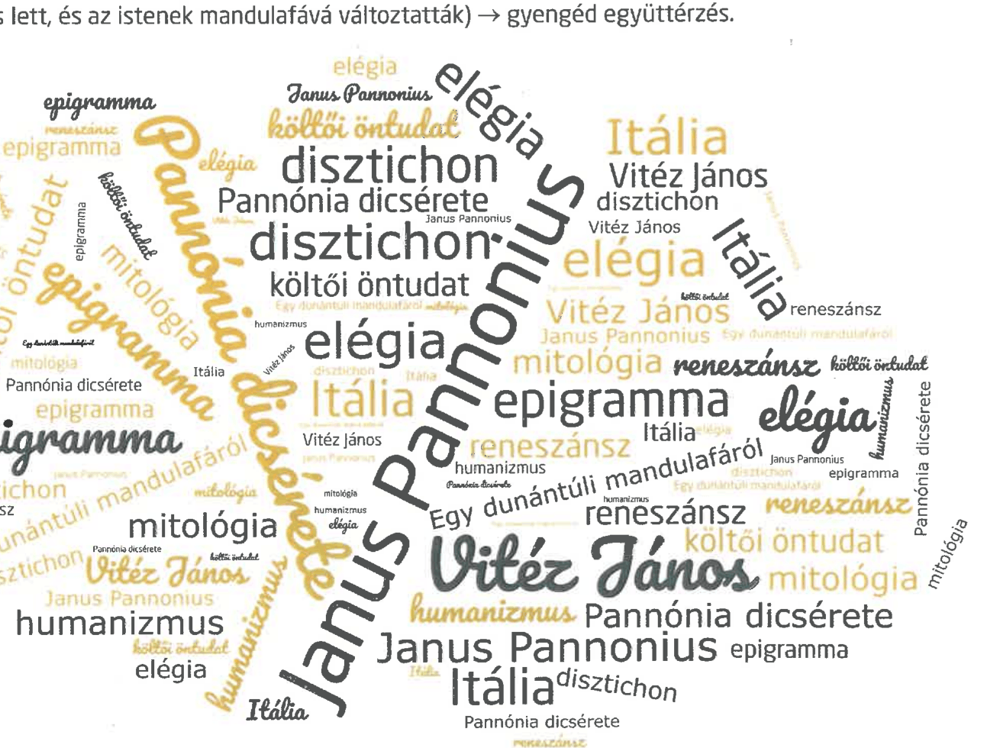

Humanista értékszemlélet Janus Pannonius epigrammaköltészetében
FELELETVÁZLAT
Janus Pannonius és a humanizmus
- Janus Pannonius a magyarországi humanista irodalom fontos képviselője.
- A 15. századi magyar reneszánsz kultúra fellendülése főleg Mátyás király uralkodásához köthető.
- Így kerülhetett a fiatal költő Ferrarába, majd Padovába, a kor itáliai szellemi műhelyeibe, ahol neve is költészetbe hamar ismertté vált.
- Visszatérése után az új eszmék nem fogadásának fájdalmát élte meg.
Az epigrammaköltő
- Janus Pannonius latinul írta költeményeit.
- Epigrammáinak keletkezése két nagyobb korszakra bontható: az ifjúkori, Itáliában írt, majd a későbbi, magyarországi költeményekre.
- Írt szatirikus, erotikus és dicsőítő epigrammákat is, és a klasszikus görög sírfeliratok is hatottak rá.
- Példaképe a római Martialis, így az epigrammaköltészetben a tömörség, csattanósság és személyes hang egyszerre van jelen.
Pannónia dicsérete
- Az 1464-65 körül keletkezett epigramma négysoros, időmértékes, disztichonokból áll.
- A költői öntudat és büszkeség hangja szól belőle: a lírai én ismeri értékeit és tudatában van annak, hogy a reneszánsz humanista költészetet ő ismertette meg Magyarországgal.
- A vers címe félrevezető, mert nem Pannónia dicsérete kerül előtérbe, hanem a költő önmaga és saját teljesítménye.
- Szerkezete két egységre bontható: az első rész az itáliai föld színvonalas költészetét állítja szembe a második részben megjelenő magyarországi megbecsüléssel.
Egy dunántúli mandulafáról
- Az epigrammaformába sűrített elégiát 1466-ban, pécsi püspöksége idején írta.
- Természeti jelenség ihlette: a vers a télen korán kivirágzó mandulafát állítja párhuzamba a vers beszélőjének sorsával.
- A virágba borult mandulafa helyzete éppoly kilátástalan, mint a Magyarországra túl korán érkező költőé.
- A műben mitológiai és személyes motívumok egyaránt jelen vannak, a zárlatot a gyöngéd együttérzés hatja át.
